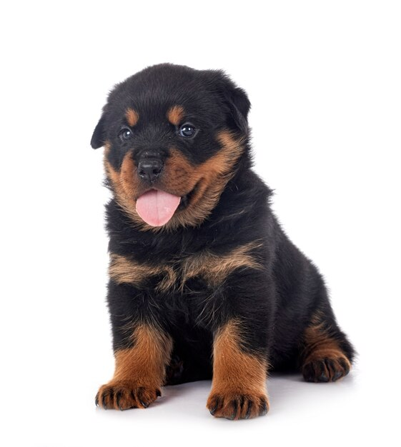
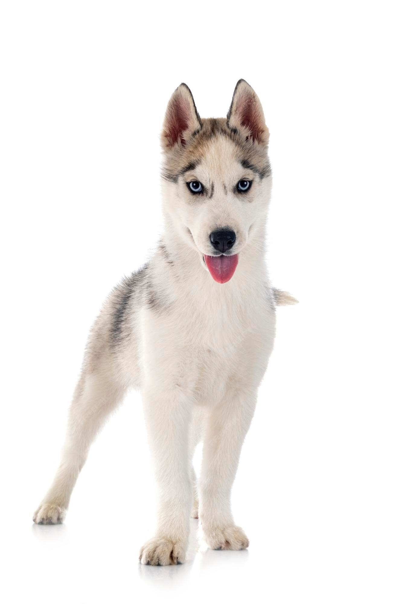
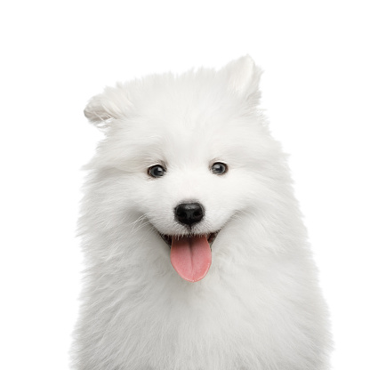

Filhote de Rottweiler
Robusto, forte e imponente, o rottweiler carrega a fama de ser bravo por seu porte intimidador, mas na verdade é apenas um cachorro com grande instinto de proteção e lealdade ao seu tutor.
R$2000,00

Filhote de Husky Siberiano
O husky siberiano é uma raça de cães de trabalho e companhia, do tipo Spitz, oriunda da Sibéria na Rússia. Sua função específica é tracionar trenós..
R$3000,00

Filhote de Samoieda
Samoiedo, ou samoieda, é uma raça de cães do tipo spitz oriunda do norte da Rússia, na região da Sibéria.
R$8000,00